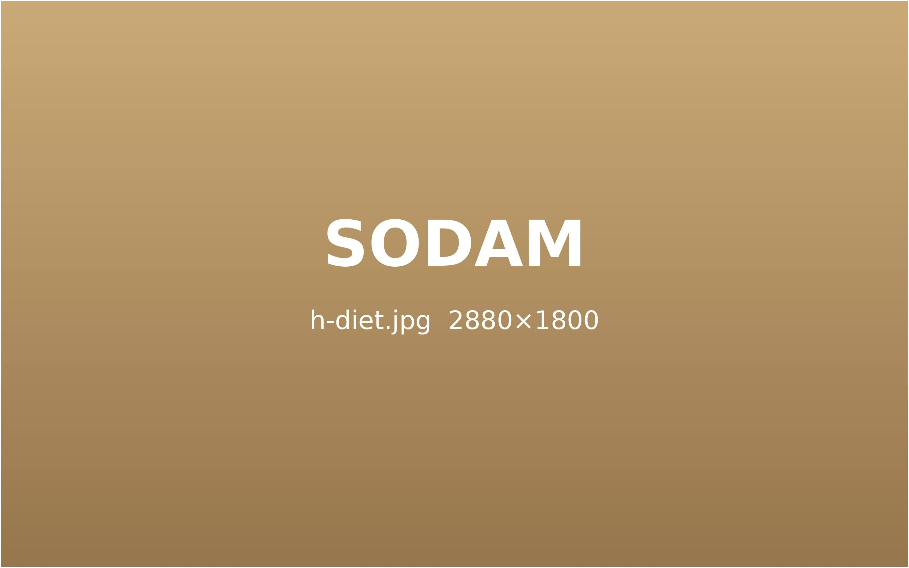
건강하게 · 쉽게 · 가볍게
소담 다이어트
같은 식단으로도 누구는 빠지고 누구는 그대로입니다. 차이는 체질과 대사에 있습니다.
소담은 몸의 반응을 매주 확인하며 목표 체중까지 함께 갑니다.
이런 다이어트,
오래 가지 못합니다.
의지가 약해서가 아닙니다.
방법이 몸과 맞지 않았을 뿐입니다.
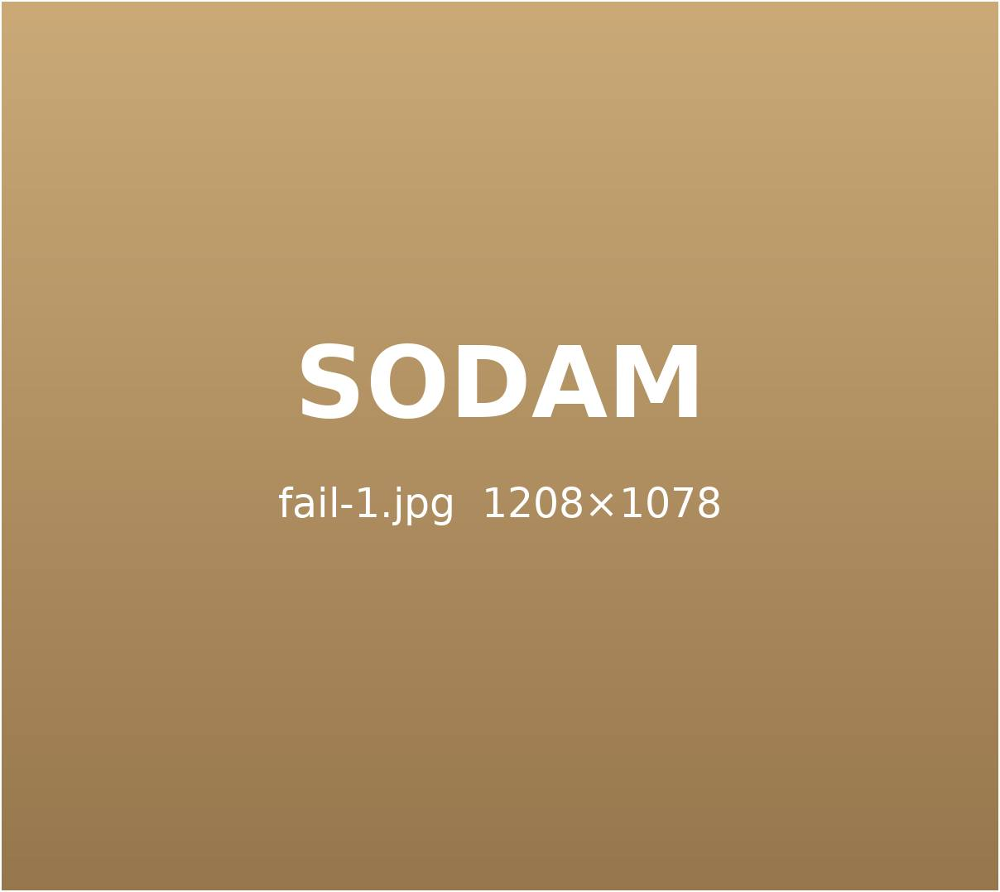
체질을 보지 않은
같은 처방
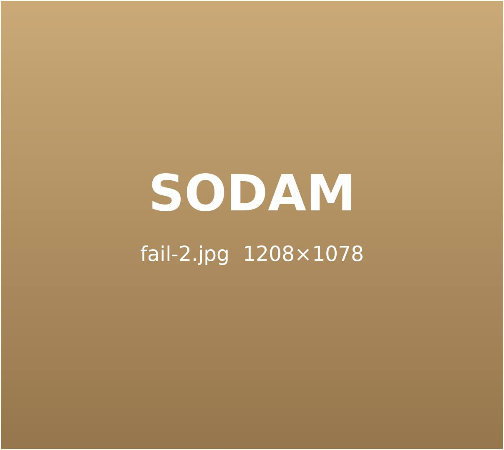
무작정 굶는
다이어트
몸의 반응을 살피지
않는 처방
방법이 다르면, 결과도 다릅니다.
사례 사진은 회원에게만 공개합니다. 카드를 누르면 로그인 창이 열립니다. (예시 카드)
소담 다이어트는
왜 꾸준히 빠질까요?
폭식 방지 · 필요할 때 추가 처방
식욕은 낮추고
식욕을 안정시키는 기초 처방으로
억지로 참지 않아도 자연스럽게 덜 먹게 돕습니다.
대사 활성 · 체지방 연소
대사는 높이고
몸이 쓰는 에너지를 늘려
같은 식사량에도 체지방이 줄도록 돕습니다.
1:1 코칭 · 주기적 점검
습관은 바꾸고
식단과 생활 리듬을 함께 점검해
감량이 끊기지 않도록 이끌어 드립니다.
체질 진단 · 처방 강도 조절
부담은 줄이고
몸의 신호를 살펴 처방을 조절하며
무리 없는 속도로 감량합니다.
소담 다이어트가 다른 이유
정확한 진단
체성분 · 체형 · 체질을 함께 보고
억지로 참는 다이어트가 아니라
자연스럽게 덜 먹는 몸을 만듭니다.
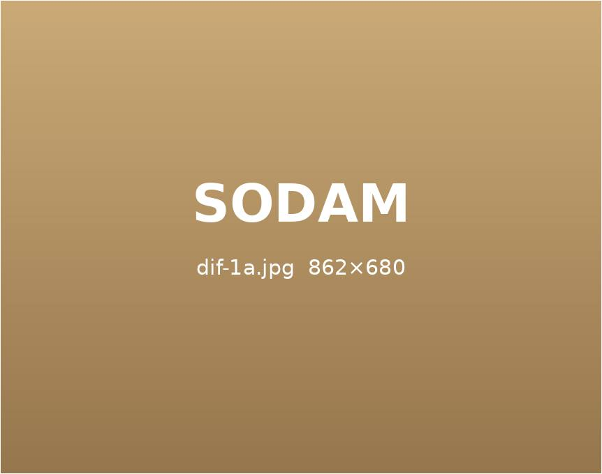
1:1 다이어트 코칭
개인 식단 안내와
정기적인 감량 점검으로
목표까지 함께 걷습니다.
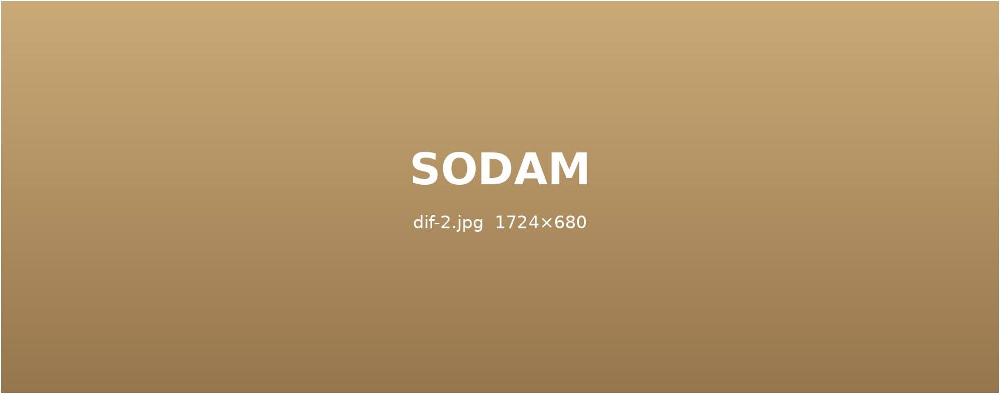
부작용 최소화
몸의 반응을 빠르게 살펴
처방과 강도를 조절하는
안전한 감량을 지향합니다.
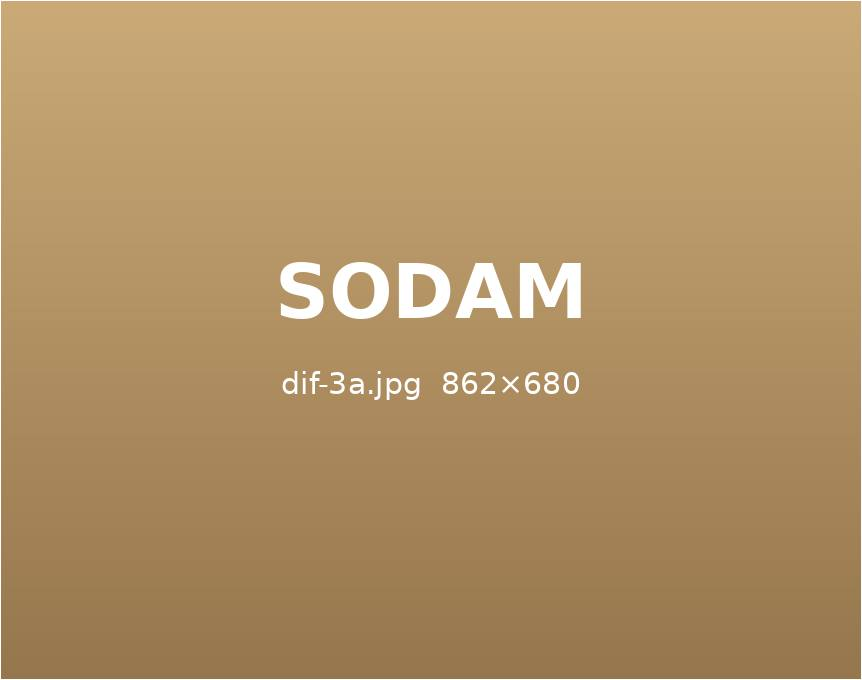
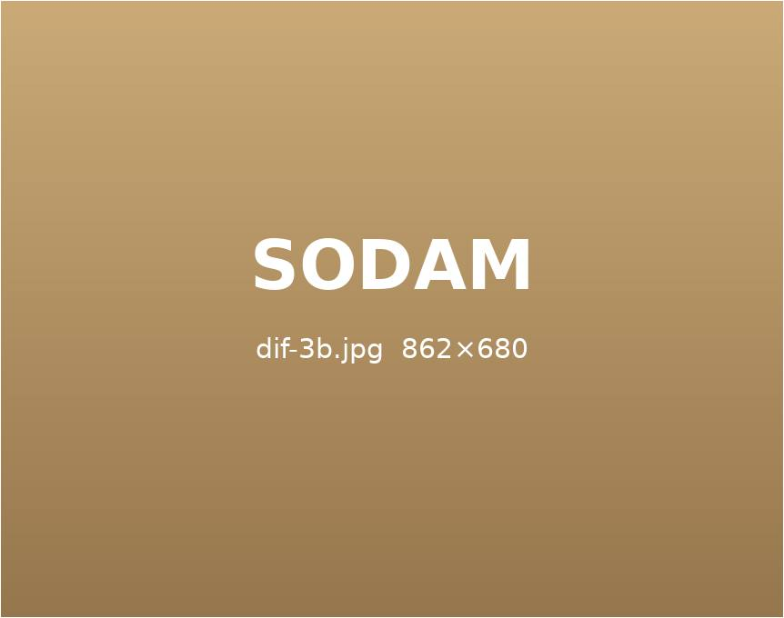
언제든 간편하게 이어 가는 소담 다이어트 환
Sodam Diet
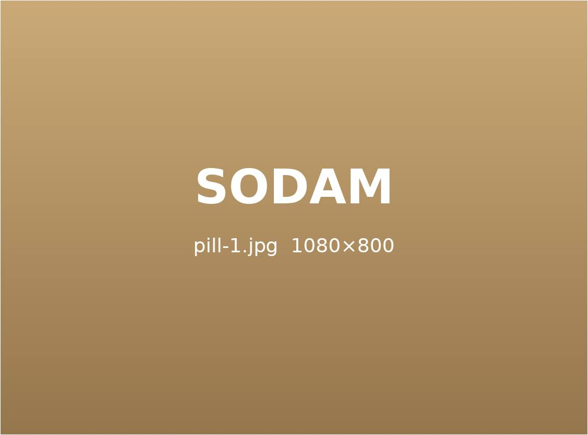
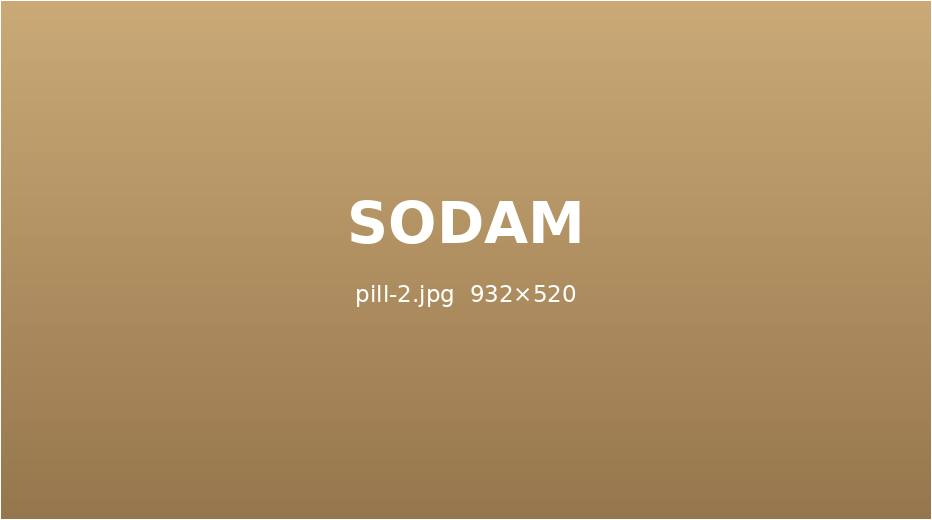
소담 다이어트 환은 지방 분해와 대사 활성에 필요한 몸 상태를 꾸준히 유지하도록 설계한 처방입니다.
몸에 무리를 주지 않으면서 체지방이 줄어드는 흐름을 이어 가도록 돕습니다.
소담 다이어트 환 하루 루틴
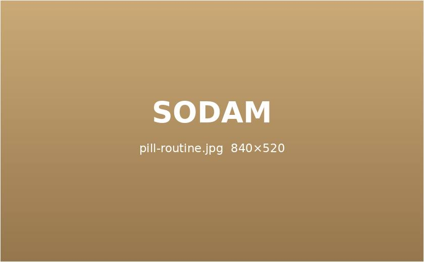
상황에 맞춘 환 프로그램
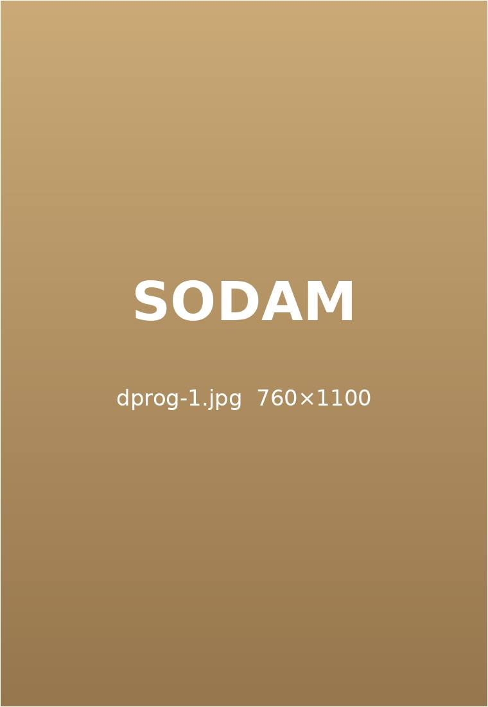
몸이 가벼워지는 첫 30일
4주 집중 리셋
노폐물 배출
몸을 무겁게 하는
노폐물을 먼저
비워 냅니다.
습관 만들기
늘어난 식사량을 줄이고
가짜 배고픔을
다스립니다.
깨우기
지방을 태우는
몸으로
바꿔 갑니다.
라인이 달라지는 100일
12주 바디 체인지
집중 감량
수분과 근육이 아닌
묵은 체지방을
줄여 갑니다.
정돈
체중보다
옷맵시가
먼저 달라집니다.
습관화
적게 먹는 일이
자연스러운
일상이 됩니다.
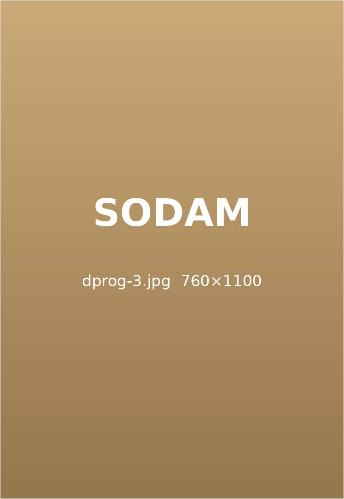
체질을 바꾸는 반년
24주 체질 완성
낮추기
몸이 기억하는
체중을 천천히
낮춥니다.
방지
감량 뒤에도
체중이 쉽게
돌아오지 않게 합니다.
생활 리듬
수면 · 식사 · 활동
리듬을 함께
바로잡습니다.
몸의 불편함까지 함께 살피는 소담 맞춤 탕약
Sodam Diet
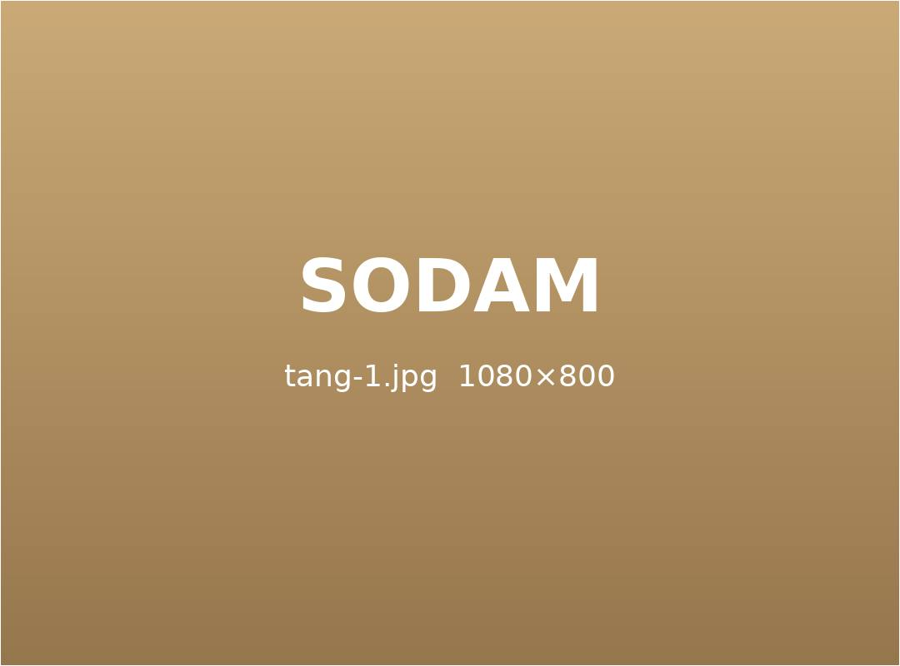
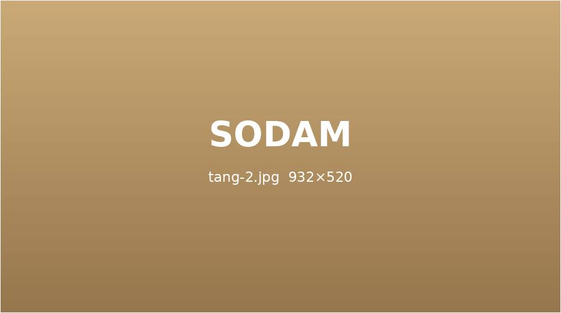
갱년기 증상, 호르몬 변화, 소화 불편처럼 다이어트와 함께 돌봐야 할 문제가 있다면,
한 사람의 상태에 맞춘 탕약으로 세심하게 관리합니다.
대사량 흐름체중 흐름
개념도 · 실제 변화는 사람마다 다릅니다.
몸이 달라지는 과정을 곁에서 함께합니다.
소담 요요 관리
목표 체중 이후까지
함께하는 유지 관리
목표 체중에 도달한 뒤에도 정기적으로 상태를 점검합니다.
체중이 다시 오르지 않도록 유지용 처방과 생활 관리를 이어 갑니다.